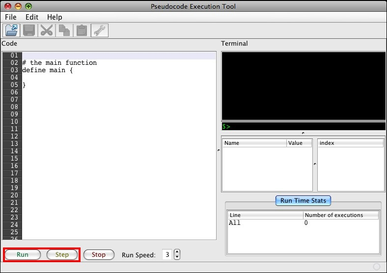

Running your code (also sometimes called executing the code) will carry out the instructions written in the code file, and, ideally, generate some useful output. There are two ways to run your code in the Pseudocode Execution Tool: Step and Run. To use either of these functions, use the buttons located at the bottom left of the code window, shown here outlined in red.
The step button will run your code one line at a time, stopping after each one until the step button is pressed again. Use this to test your code line by line to see what is happening at each step of your program. (This is a common practice in finding and removing errors in your code, a process commonly referred to as debugging)
The execute button will run your code until it finds a breakpoint. Use this if you want to test your program as a whole, or get to a breakpoint before you test individual lines.
In either case, output will be sent to the terminal (top right). Input, if applicable, will be typed into the terminal as well.